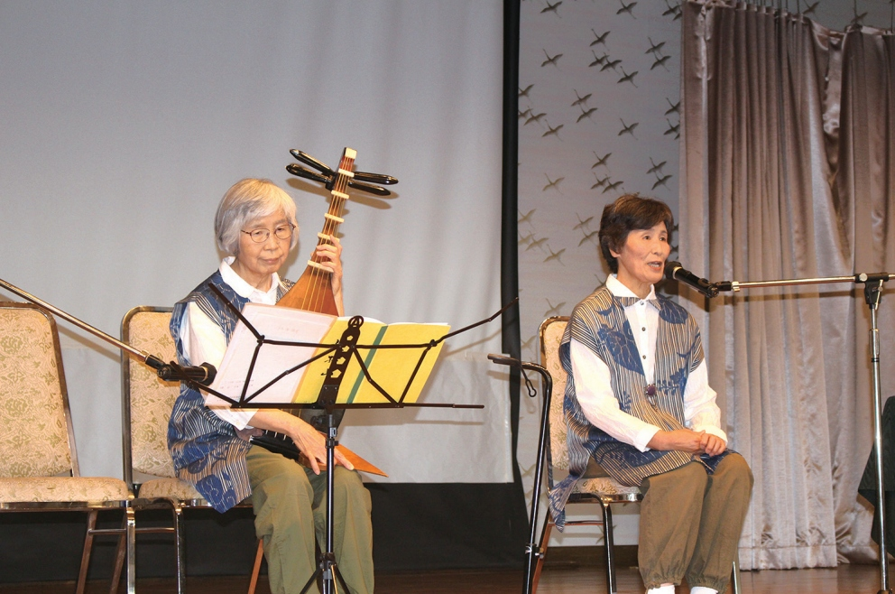
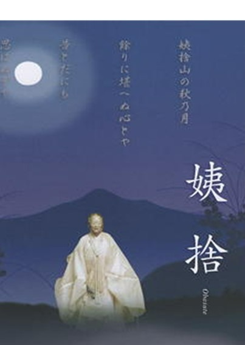
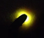

冊子「冠着山」(姨捨山)
信州百名山・霊峰冠着山の自然・歴史・文化・登山マップを網羅した公式冊子「冠着山」のデジタル版（全36ページ）です。

信州百名山・歌枕として名高い霊峰「冠着山（姨捨山）」。古今和歌集や大和物語の姨捨伝説、山頂に群生するヒメボタル、蘇った修験道体験、登山ルート、豊かな自然と山麓の人々の伝統を後世へ伝える総合案内。
信州百名山・霊峰冠着山の自然・歴史・文化・登山マップを網羅した公式冊子「冠着山」のデジタル版（全36ページ）です。
冠着山(姨捨山)の麓に伝わる、親孝行と老人の知恵の物語。(製作と語り:更級かたりべの会)


姨捨伝説の源流。 老人の知恵と親孝行を伝える「姨捨伝説」は、 この姨捨山(冠着山)の麓が発祥の地。 それを記念する姨捨孝子観音が鎮座し、 伝説を伝える記念碑「姨捨孝子観音由来之碑」が立ち並ぶ。 ここは、冠着神社の里宮でもある。
霊峰冠着山での信仰と、市民団体によって蘇った修験道体験。
冠着山の植物や地質、昆虫などを学ぶ
学習イベント「冠着大学」の案内チラシアーカイブ。
冠着大学とは（昔、地元の先輩たちは、山や田畑での厳しい労働の合間に、
冠着山の山中や麓で休憩しながらいろいろと学び合った。
この学びの場を冠着大学と言われていた。
その伝統を引き継いで冠着大学が開校された。）
謡曲「姨捨（おばすて）」は、長野県千曲市の姨捨伝説と
「古今和歌集」(わが心慰め兼ねつ、、、、。)の歌を題材とした能の秘曲で、
室町時代に世阿弥が作成した。
世阿弥は、日本の室町時代初期の大和猿楽結崎座の猿楽師。
父の観阿弥とともに猿楽を大成し、多くの書を残した。
観阿弥と世阿弥の能は観世流として現代に受け継がれている。
能楽は2001年、「人類の宝物の伝統芸能」として世界無形文化遺産となった。
仲秋の名月の夜、都人の一行が月の名所である信濃国・姨捨山を訪れます。その平らな頂上で出会った村の女に案内され、昔老婆が捨てられたという旧跡を巡ります。女は自分こそがその老女の霊であるとほのめかして姿を消します。
夜が更け月が明るく照り映えています。都人がその景色を楽しんでいると、白い衣を着た老女の亡霊が再び現れました。老女は、自分を捨てたこの世への恨みではなく、「月の美しさ」への強い執心（愛着）を抱いていました。月光を極楽浄土の姿と讃えて舞を舞いますが、やがて夜が明けてきました。都人が山を後にし、老女はそれを見送ると、捨てられた昔と同じく、ただ一人残されたのでした。
冠着山の姫ボタルは、この謡曲の中に出てくる老女の亡霊ではないかと地元では言われています。


歴史ある寺院や、麓の里で活動するコミュニティ、人々をご紹介します。
平成24年に結成。冠着山の自然の調査と保護、歴史的文化遺産の調査と復活、登山コースの整備、登山・観光ガイドなどを実施。また冠着大学と称する学習会を行っている。会員数26名。
冠着山の頂上付近の姫ボタル(冊子に詳しく掲載)の保護について。当会ではその保護とガイドを行っています。この蛍は絶滅の危惧のある大変デリケートな昆虫です。
よって、見学と写真撮影はできますが、「捕獲は禁止」です。